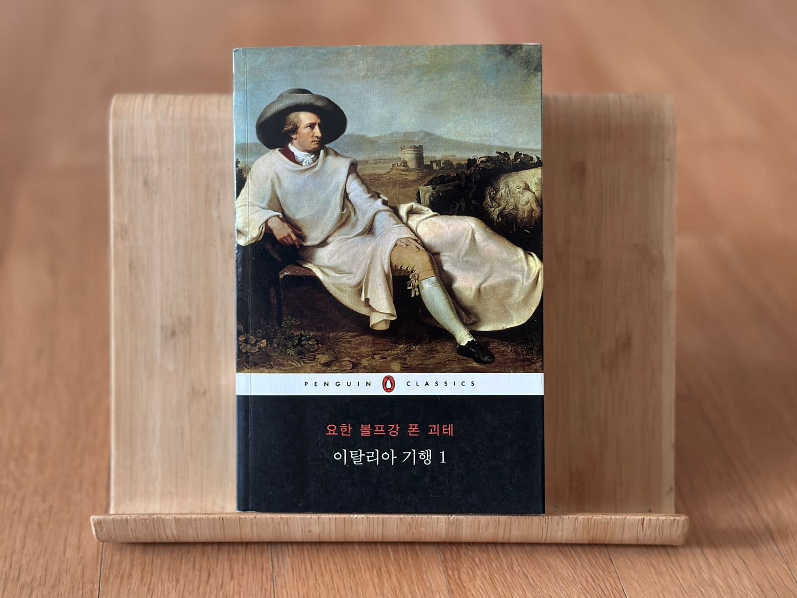
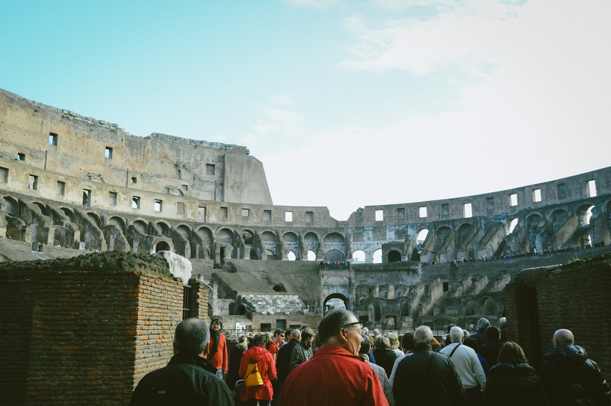
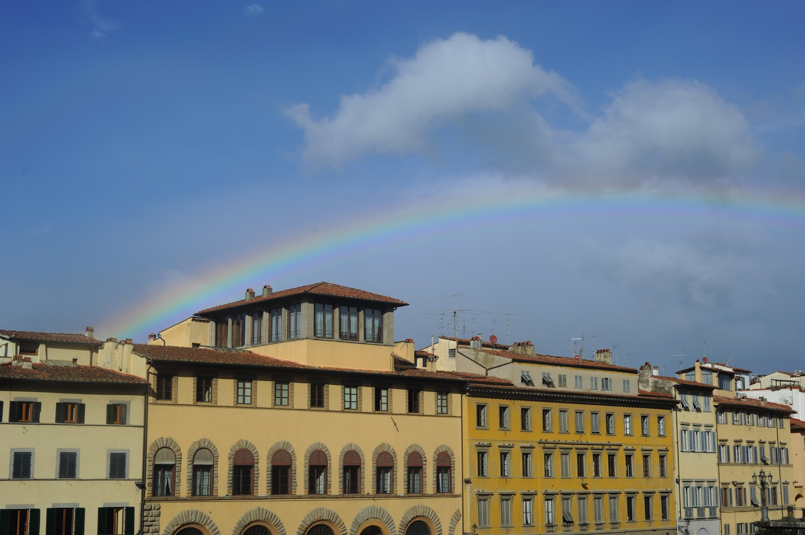

안녕하세요 라보엠입니다.
2025년 3월 31일(월)부터 시작한 tvN의 인문 예능 알쓸별잡 지중해편은 윤종신, 배두나를 비롯한 여러 분야의 석학들과 크루즈를 타고 지중해를 배경으로 다양한 도시를 여행하며, 인문, 과학, 건축, 문학 등을 다양한 시각으로 풀어내는 토크 예능입니다. 이번 방송에서는 이탈리아 시칠리아에 도착해 문명과 예술에 대한 깊이있는 이야기를 나눴는데요, 안희연 작가는 괴테의 발자취를 따라가며, 그의 책 이탈리아 기행에 대한 소개가 나옵니다.
[알쓸별잡 지중해편] 안희연 작가가 따라간 괴테의 발자취
이번 시즌에서는 특히 이탈리아 로마를 중심으로 문명과 예술에 대한 깊이 있는 이야기를 선보이며, 괴테의 명작 파우스트와, 이탈리아 기행을 언급하며 문학적 감동을 더했습니다
괴테 - 이탈리아 기행
이 작품은 1786년부터 1788년까지 괴테가 이탈리아를 여행하며 남긴 일기와 편지, 그리고 성찰을 바탕으로 작성된 책으로, 괴테가 예술적, 개인적 갱신을 위해 떠난 여정을 생생히 담고 있으며, 독자들에게 당시 유럽의 문화와 예술, 그리고 자연에 대한 깊은 통찰을 제공하고 있습니다. 펭귄북스 클래식에 18,19권에 포함되어 있습니다.

여행의 시작과 배경
괴테는 1786년 9월 3일 새벽, 독일 바이마르에서 몰래 출발했습니다. 당시 그는 시인이자 공직자로서의 의무와 사회적 기대에 억눌려 있었고, 새로운 영감과 자유를 갈망했습니다. 이탈리아는 고대와 르네상스 예술의 중심지로, 괴테에게는 이상적인 탈출구이자 재탄생의 장소로 여겨졌습니다. 그는 익명으로 여행하며 자신만의 방식으로 이탈리아를 탐험하고자 했습니다.
주요 여정과 경험
괴테는 북부 이탈리아에서 시작해 로마, 나폴리, 시칠리아 등 이탈리아 전역을 여행하며 각 지역의 독특한 매력을 기록했습니다.
- 베네치아와 북부 이탈리아: 베네치아에서는 도시의 화려함에 감탄하면서도 상업적 분위기에 실망감을 느꼈습니다. 반면 베로나와 비첸차에서는 로마 유적과 팔라디오 건축에서 영감을 받으며 예술적 열정을 되찾았습니다.
- 로마: 고대 유적과 르네상스 예술로 가득한 로마는 괴테에게 가장 큰 감명을 준 도시였습니다. 그는 포럼과 판테온을 탐험하고, 예술가들과 교류하며 자신의 미학적 관점을 발전시켰습니다.
- 나폴리와 시칠리아: 나폴리에서는 활기찬 도시 생활과 자연의 위대함에 매료되었습니다. 특히 베수비오 화산과 폼페이 유적은 그의 자연에 대한 경외감을 자극했습니다. 시칠리아에서는 그리스 신전들을 방문하며 고대 문명의 본질에 한층 더 가까워졌습니다.

책의 핵심 주제
- 자기 발견과 성장
괴테는 이 여행을 통해 자신의 내면을 탐구하고, 삶과 예술에 대한 새로운 관점을 얻었습니다. 특히 이탈리아의 자연과 예술은 그에게 조화와 균형의 중요성을 일깨워 주었습니다. - 예술적 영감
고대와 르네상스 예술에서 받은 감동은 이후 그의 작품에 깊은 영향을 미쳤습니다. 이피게니아와 토르콰토 타소 같은 작품들은 이러한 경험에서 비롯된 고전적 미학을 반영합니다. - 문화적 관찰
괴테는 독일과 이탈리아 문화 간의 차이를 세심히 관찰하며 두 나라가 서로 보완할 수 있는 점들을 기록했습니다. 이는 그의 글에 풍부한 문화적 통찰력을 더해줍니다.
이탈리아 기행은 일기 형식으로 작성되어 괴테가 매일 느낀 감정과 생각을 생생히 전달합니다. 그의 문체는 때로는 시적으로, 때로는 분석적으로 변주되며 독자들에게 다양한 감정을 불러일으킵니다. 이러한 스타일 덕분에 독자는 단순히 여행 이야기를 읽는 것이 아니라 마치 괴테와 함께 이탈리아를 여행하는 듯한 경험을 할 수 있습니다.
맺음말
괴테의 이탈리아 기행은 고전 문학 작품을 넘어 현대 독자들에게도 중요한 메시지를 전달합니다. 이 책은 여행이 그저 장소를 방문하는 것이 아니라 자신을 발견하고 삶의 새로운 가치를 찾는 과정임을 보여줍니다. 또한 예술과 자연, 그리고 인간 경험의 조화를 통해 진정한 아름다움이 무엇인지 성찰하게 합니다.
괴테가 이탈리아에서 찾은 영감과 자유는 오늘날에도 많은 사람들에게 여전히 울림을 주며, 그의 여정은 우리 모두에게 열린 가능성으로 남아 있습니다. 이번 알쓸별잡과 괴테의 이탈리아 기행을 보고 있으니 신혼여행으로 갔던 이탈리아가 떠올랐습니다. 로마도 좋았지만, 피렌체가 너무 아름다웠죠. 다시 한 번 이탈리아로 가고 싶습니다. 지금은 아쉽지만 이 책 이탈리아 기행과 알쓸별잡으로 마음을 달래봅니다.
